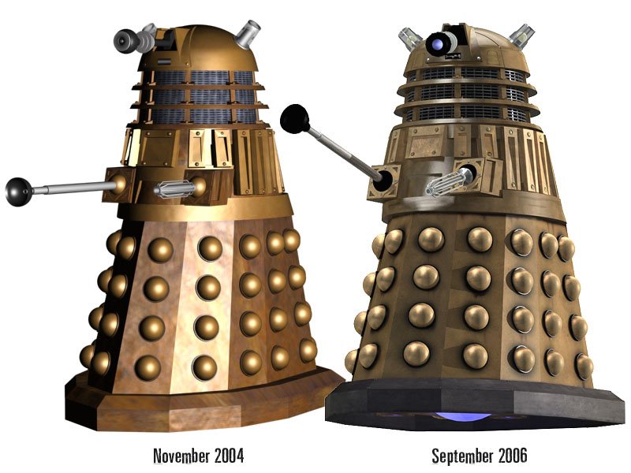

A Review of Battlestar Galactica: 3/5 Beets
FACT: Basically a shot-for-shot remake of the original

Pictured: Original Dementor (left) vs. Remake (right)
All the crazy monsters and stuff, you know like Klingons and Wookies and all that.
FACT: The story's kind of bland.
It's about this guy named Dumbledore Calamazin and he has to return the ring back to Mordor.
Summary: It was really so-so.
My Perfect Crime
I break into Tiffany's at midnight. Do I go for the vault? No. I go for the chandelier. It's priceless. As I'm taking it down, a woman catches me. She tells me to stop. It's her father's business. She's Tiffany. I say, "No." We make love all night.
In the morning the cops come, and I escape in one of their uniforms. I tell her to meet me in Mexico, but I go to Canada. I don't trust her. Besides, I like the cold. 30 years later I get a postcard. I have a son, and he's the chief of police.
This is where the story gets interesting. I tell Tiffany to meet me in Paris by the Trocadéro. She's been waiting for me all these years; she's never taken another lover. I don't care. I don't show up, I go to Berlin. That's where I stashed the chandelier.